Installation
# Install PRONE.R from github and build vignettes
if (!requireNamespace("devtools", quietly = TRUE)) install.packages("devtools")
devtools::install_github("lisiarend/PRONE.R")
# Load and attach PRONE.R Real-world Data Sets
The following sections present the functionalities of PRONE based on a TMT and LFQ data set.
The example TMT data set originates of:
Fantahun Biadglegne et al. Mycobacterium tuberculosis Affects Protein and Lipid Content of Circulating Exosomes in Infected Patients Depending on Tuberculosis Disease State. Biomedicines 10.4 (Mar. 2022), p. 783. https://doi.org/10.3390/biomedicines10040783.
The example LFQ data set originates of:
Anni P. Vehmas et al. Liver lipid metabolism is altered by increased circulating estrogen to androgen ratio in male mouse. Journal of Proteomics 133 (Feb. 2016), pp. 66–75. https://doi.org/10.1016/j.jprot.2015.12.009.
Load Data
For loading the data, you need to first load the protein intensity
table and meta-data information in a data frame If you have a TMT data
set with reference samples, you need to specify the reference samples.
Then, you can call the load_data() function to load the
data into a SummarizedExperiment by specifying some additional
parameters. You need to make sure that the sample names are saved in a
column named “Column” in the meta-data table and are named accordingly
in the protein intensity table.
Example 1: TMT Data Set
data <- read.csv("../inst/extdata/real_world/TMT/proteinGroups.txt", sep ="\t")
md <- read.csv("../inst/extdata/real_world/TMT/metadata.txt", sep = "\t")
md$Column <- stringr::str_replace_all(md$Column, " ", ".")
ref_samples <- md[md$Group == "Common.reference",]$Column
se <- load_data(data, md, protein_column = "Protein.IDs", gene_column = "Gene.names", ref_samples = ref_samples, batch_column = "Pool", condition_column = "Group", label_column = "Label")Example 2: LFQ Data Set
LFQ_data <- read.csv("../inst/extdata/real_world/LFQ/MOUSE-Data-NonNormalized.csv", row.names = 1)
# Create metadata (since it was not given)
LFQ_md <- data.frame(Column = colnames(LFQ_data)[1:(ncol(LFQ_data)-2)])
LFQ_md$Animal <- sapply(strsplit(as.character(LFQ_md$Column),"_"), "[", 1)
LFQ_md$Condition <- sapply(strsplit(as.character(LFQ_md$Column),"_"), "[", 2)
LFQ_se <- load_data(LFQ_data, LFQ_md, protein_column = "Accession", gene_column = NULL, ref_samples = NULL, batch_column = NULL, condition_column = "Condition", label_column = NULL)Overview of the Data
To get an overview on the number of NAs, you can simply use the
function get_NA_overview():
get_NA_overview(se, ain = "log2")
#> Total.Values NA.Values NA.Percentage
#> <int> <int> <num>
#> 1: 6020 1945 32.30897To get an overview on the number of samples per sample group or
batch, you can simply use the function
plot_condition_overview() by specifying the column of the
meta-data that should be used for coloring. By default (condition =
NULL), the column specified in load_data()will be used.
plot_condition_overview(se, condition = NULL)
#> Condition of SummarizedExperiment used!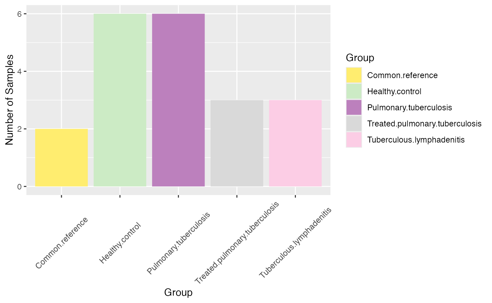
plot_condition_overview(se, condition = "Pool")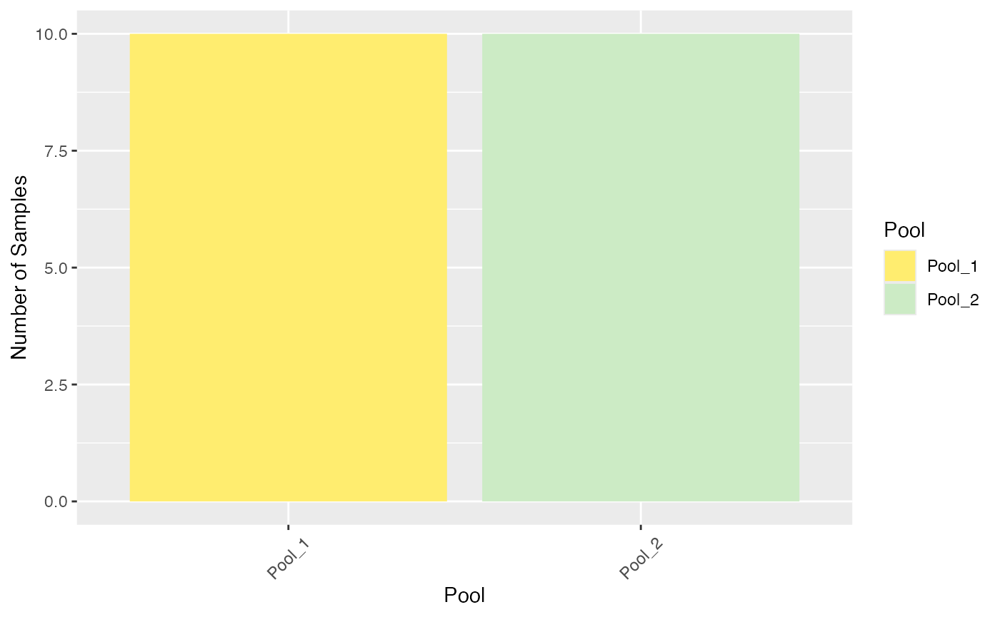
A general overview of the protein intensities across the different
samples is provided by the function plot_heatmap(). The
parameter “ain” specifies the data to plot, currently only “raw” and
“log2” is available (names(assays(se)). Later if multiple normalization
methods are executed, these will be saved as assays, and the normalized
data can be visualized.
available_ains <- names(SummarizedExperiment::assays(se))
plot_heatmap(se, ain = "log2", color_by = c("Pool", "Group"), label_by = NULL, only_refs = FALSE)
#> Label of SummarizedExperiment used!
#> $log2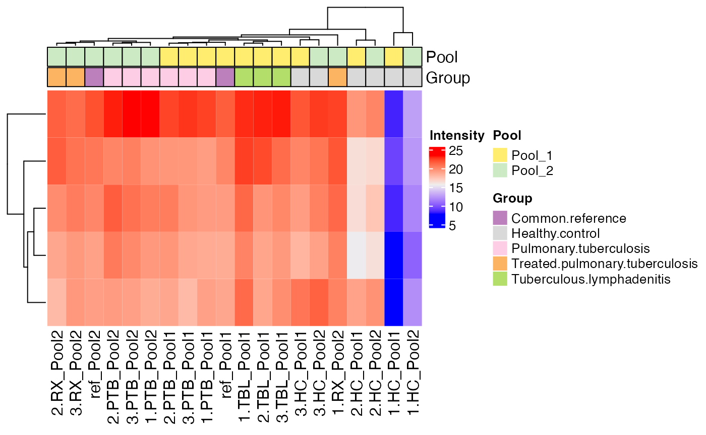
Similarly, an upset plot can be generated to visualize the overlaps between sets defined by a specific column in the metadata. The sets are generated by using non-NA values.
plot_upset(se, color_by = NULL, label_by = NULL, mb.ratio = c(0.7,0.3), only_refs = FALSE)
#> Condition of SummarizedExperiment used!
#> Label of SummarizedExperiment used!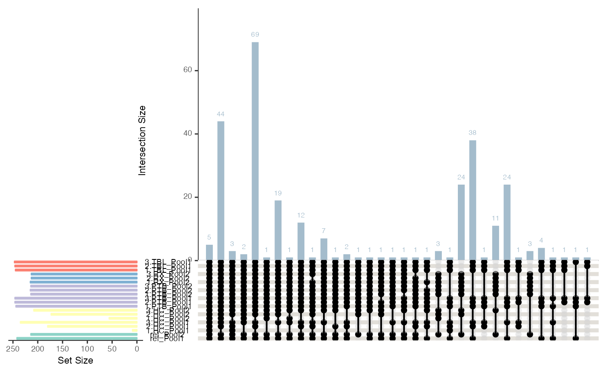
TODO: plot_pairs_panels !
If you are interested in the intensities of specific biomarkers, you
can use the plot_markers_boxplots() function to compare the
distribution of intensities per group. The plot can be generated per
marker and facet by normalization method (facet_norm = TRUE) or by
normalization method and facet by marker (facet_marker = TRUE).
p <- plot_markers_boxplots(se, markers = c("Q92954;J3KP74;E9PLR3", "Q9Y6Z7", "Q68CQ4"), ain = "log2", id_column = "Protein.IDs", facet_norm = FALSE, facet_marker = TRUE)
#> Condition of SummarizedExperiment used!
#> No shaping done.
p[[1]] + ggplot2::theme(axis.text.x = ggplot2::element_text(angle = 90, vjust = 0.5))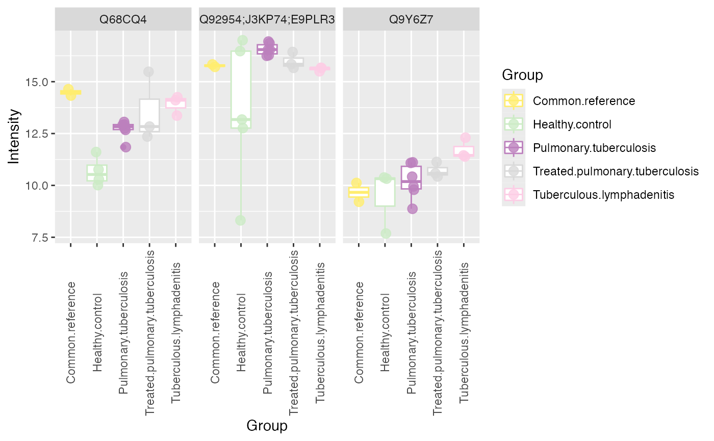
Filter Proteins
Remove Proteins With Missing Values in ALL Samples
se <- filter_complete_NA_proteins(se)
#> 13 proteins were removed.Remove Proteins With a Specific Value in a Specific Column
Typically proteins with “+” in the columns “Reverse”, “Only.identified.by.site”, and “Potential.contaminant” are removed in case of a MaxQuant proteinGroups.txt output file.
se <- filter_proteins_by_value(se, "Reverse", "+")
#> 17 proteins were removed.
se <- filter_proteins_by_value(se, "Only.identified.by.site", "+")
#> 1 proteins were removed.
#se <- filter_proteins_by_value(se, "Potential.contaminant", "+")Remove Proteins by ID
If you don’t want to remove for instance all proteins with
“Potential.contaminant == +”, you can also first get the protein ID with
the specific value, check them in Uniprot, and then remove only some by
using the function filter_proteins_by_ID().
pot_contaminants <- get_proteins_by_value(se, "Potential.contaminant", "+")
#> 24 proteins were identified.
se <- filter_proteins_by_ID(se, pot_contaminants)
#> 24 proteins were removed.Explore Missing Value Pattern
Due to the high amount of missing values in MS-based proteomics data,
it is important to explore the missing value pattern in the data. The
function plot_NA_heatmap() provides a heatmap of the
proteins with at least one missing value across all samples.
plot_NA_heatmap(se, color_by = NULL, label_by = NULL, cluster_samples = TRUE, cluster_proteins = TRUE)
#> Condition of SummarizedExperiment used!
#> Label of SummarizedExperiment used!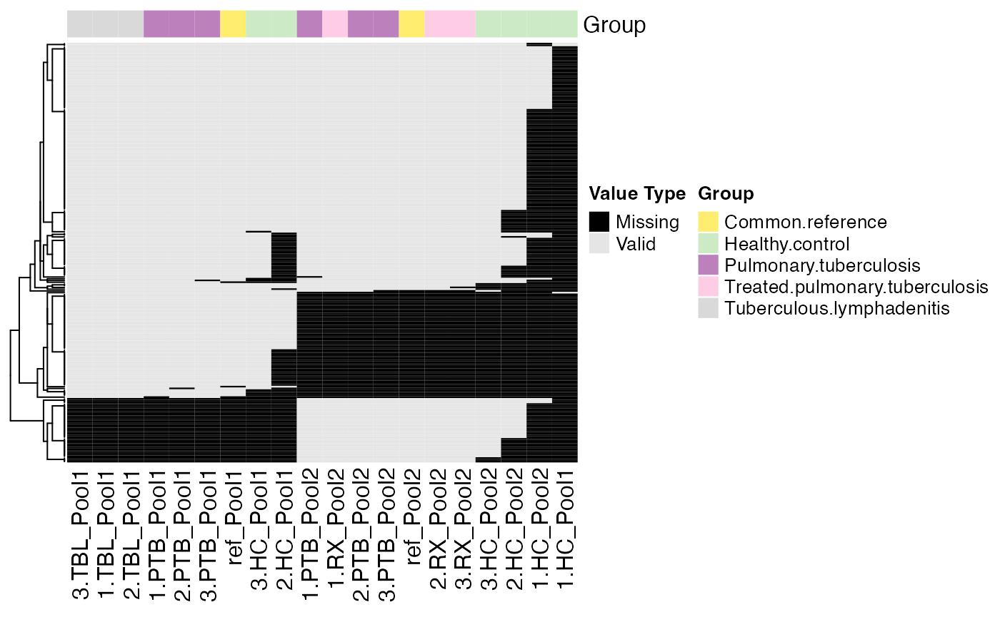
Another way to explore the missing value pattern is to use the functions
plot_NA_density() and plot_NA_frequency().
plot_NA_density(se)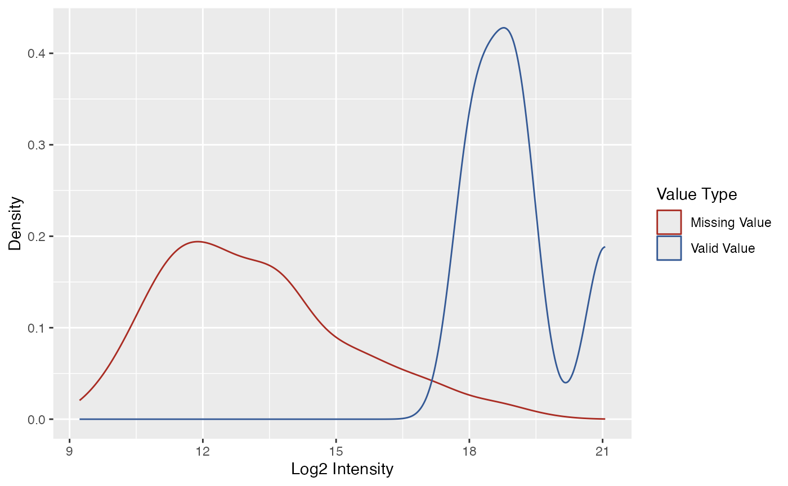
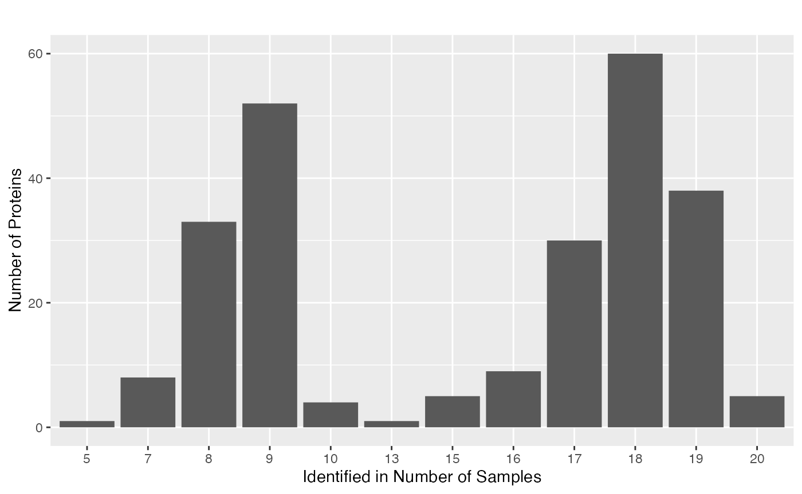
Filter Proteins By Applying a Missing Value Threshold
To reduce the amount of missing values, it is possible to filter
proteins by applying a missing value threshold. The function
filter_NA_proteins_by_threshold() removes proteins with
more missing values than the specified threshold. The threshold is a
value between 0 and 1, where 0.7, for instance, means that proteins with
less than 70% of real values will be removed, i.e., proteins with more
than 30% missing values will be removed.
se <- filter_NA_proteins_by_threshold(se, thr = 0.7)
#> 99 proteins were removed.
plot_NA_heatmap(se)
#> Condition of SummarizedExperiment used!
#> Label of SummarizedExperiment used!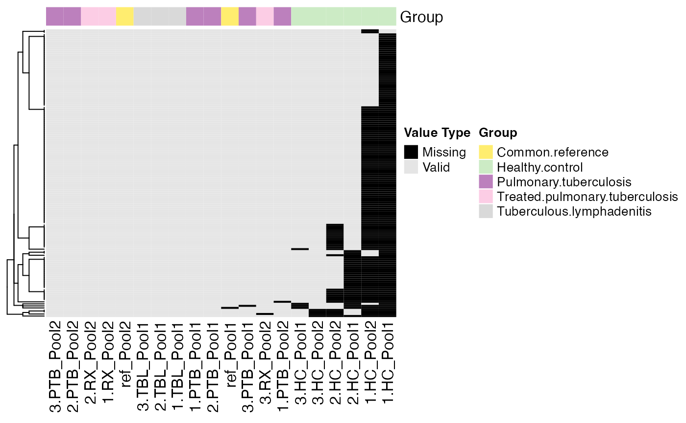
Filter Samples
Following filtering proteins by different criteria, samples can be
analyzed more in detail. PRONE provides some functions, such as
plot_nr_prot_samples() and
plot_tot_int_samples(), to get an overview of the number of
proteins and the total intensity per sample, but also offers the
automatic outlier detection method of POMA.
Quality Control
plot_nr_prot_samples(se, color_by = NULL, label_by = NULL)
#> Condition of SummarizedExperiment used!
#> Label of SummarizedExperiment used!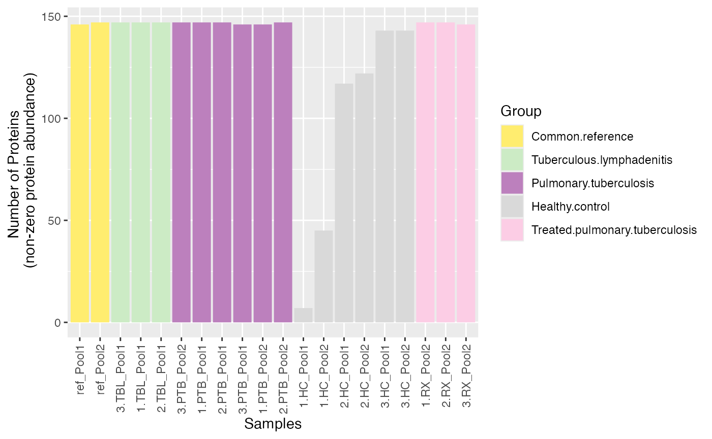
plot_tot_int_samples(se, color_by = NULL, label_by = NULL)
#> Condition of SummarizedExperiment used!
#> Label of SummarizedExperiment used!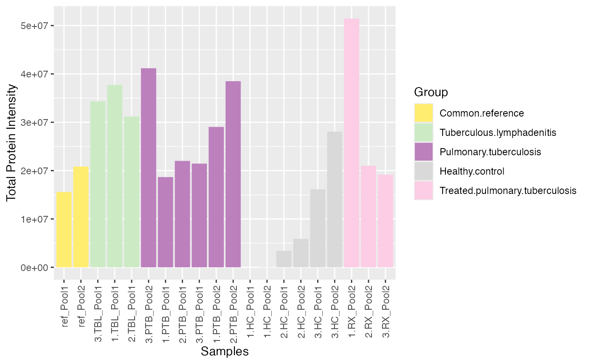
Remove Samples Manually
Based on these plots, samples “1.HC_Pool1” and 1_HC_Pool2 seem to be
outliers. You can easily remove samples manually by using the
remove_samples_manually() function.
se <- remove_samples_manually(se, "Label", c("1.HC_Pool1", "1.HC_Pool2"))
#> 2 samples removed.Remove Reference Samples
And you can remove the reference samples directly using the function
remove_reference_samples(). But attention: possibly you
need them for normalization! That is exactly why we currently keep
them!
se_no_refs <- remove_reference_samples(se)
#> 2 reference samples removed from the SummarizedExperiment object.Outlier Detection via POMA R Package
The POMA R package provides a method to detect outliers in proteomics
data. The function detect_outliers_POMA() detects outliers
in the data based on the POMA algorithm. The function returns a list
with the following elements: polygon plot, distance boxplot, and the
outliers. For further information on the POMA algorithm, please refer to
the original publication: 10.1371/journal.pcbi.1009148.
#poma_res <- detect_outliers_POMA(se, ain = "log2")
#poma_res$polygon_plot
#poma_res$distance_boxplot
#poma_res$outliersTo remove the outliers detected via the POMA algorithm, just put the
data.table of the detect_outliers_POMA() function into the
remove_POMA_outliers() function.
#se <- remove_POMA_outliers(se, poma_res$outliers)Normalization
For normalization, there are multiple functions available which can be used to normalize the data. First of all, to know which normalization methods can be applied:
get_normalization_methods()
#> [1] "GlobalMean" "GlobalMedian" "Median" "Mean"
#> [5] "IRS" "Quantile" "VSN" "LoessF"
#> [9] "LoessCyc" "RLR" "RlrMA" "RlrMACyc"
#> [13] "EigenMS" "MAD" "RobNorm" "TMM"
#> [17] "limBE" "NormicsVSN" "NormicsMedian"You can use normalize_se() by specifying all
normalization methods you want to apply on the data. For instance, if
you want to perform median, mean, and MAD normalization, just execute
this line:
se_norm <- normalize_se(se, c("RobNorm", "Mean", "MAD"), combination_pattern = NULL)
#> RobNorm completed.
#> Mean completed.
#> The legacy packages maptools, rgdal, and rgeos, underpinning the sp package,
#> which was just loaded, will retire in October 2023.
#> Please refer to R-spatial evolution reports for details, especially
#> https://r-spatial.org/r/2023/05/15/evolution4.html.
#> It may be desirable to make the sf package available;
#> package maintainers should consider adding sf to Suggests:.
#> The sp package is now running under evolution status 2
#> (status 2 uses the sf package in place of rgdal)
#> MAD completed.However, you can directly also add combinations of methods. The combination pattern specifies which method to apply on top of the specified normalized data. For instance, if you want to perform IRS on top of Median-normalized data:
se_norm <- normalize_se(se, c("RobNorm", "Mean", "MAD", "IRS_on_RobNorm"), combination_pattern = "_on_")
#> RobNorm completed.
#> Mean completed.
#> MAD completed.
#> IRS normalization performed on RobNorm-normalized data completed.Finally, you can also normalize your data by applying the specific
normalization method. This makes it possible to design the parameters of
an individual function more specifically. For instance, if you want to
normalize the data by the median, you can use the function
medianNorm(). By default, median normalization is performed
on raw-data. Using the individual normalization functions, you can
easily specify
se_norm <- medianNorm(se_norm, ain = "log2", aout = "Median")All normalized intensities are stored in the SummarizedExperiment object and you can check the already performed normalization techniques using:
names(SummarizedExperiment::assays(se_norm))
#> [1] "raw" "log2" "RobNorm" "Mean"
#> [5] "MAD" "IRS_on_RobNorm" "Median"We suggest using the default value of the on_raw parameter. This parameter specifies whether the data should be normalized on raw or log2-transformed data. The default value of the “on_raw” parameters was made for each normalization method individually based on publications.
Qualitative and Quantitative Evaluation
PRONE offers many functions to comparatively evaluate the performance of the normalization methods. Notably, the parameter “ain” can always be set. By specifying “ain = NULL”, all normalization methods that were previously performed and are saved in the SummarizedExperiment object are considered. If you want to evaluate only a selection of normalization methods, you can specify them in the “ain” parameter. For instance, if you want to evaluate only the IRS_on_RobNorm and Mean normalization methods, you can set “ain = c(”IRS_on_RobNorm”, “Mean”)“.
Visual Inspection
You can comparatively visualize the normalized data by using the
function plot_boxplots(), plot_densities(),
and plot_pca().
Boxplots of Normalized Data
plot_boxplots(se_norm, ain = NULL, color_by = NULL, label_by = NULL, ncol = 3, facet_norm = TRUE)
#> All assays of the SummarizedExperiment will be used.
#> Condition of SummarizedExperiment used!
#> Label of SummarizedExperiment used!
But you can also just plot a selection of normalization methods and color for instance by batch:
plot_boxplots(se_norm, ain = c("IRS_on_RobNorm", "Mean"), color_by = "Pool", label_by = NULL, facet_norm = TRUE)
#> Label of SummarizedExperiment used!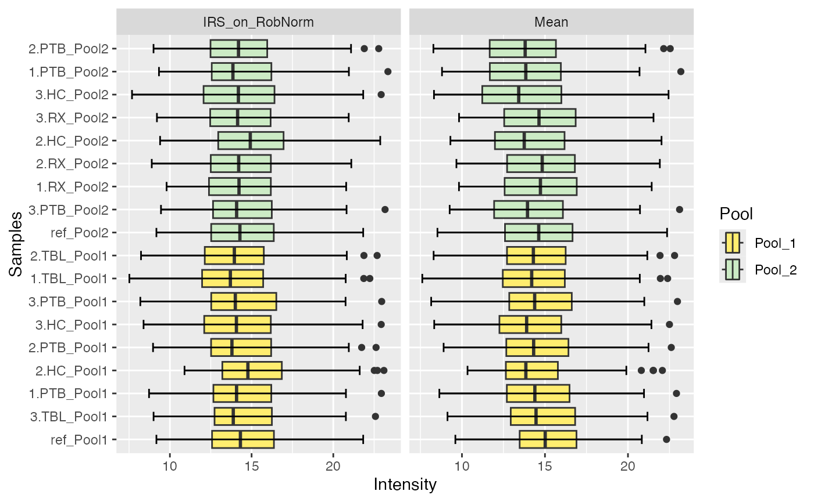
Another option that you have is to return the boxplots for each normalized data independently as a single ggplot object. For this, you need to set facet = FALSE:
plot_boxplots(se_norm, ain = c("IRS_on_RobNorm", "Mean"), color_by = "Pool", label_by = NULL, facet_norm = FALSE)
#> Label of SummarizedExperiment used!
#> $IRS_on_RobNorm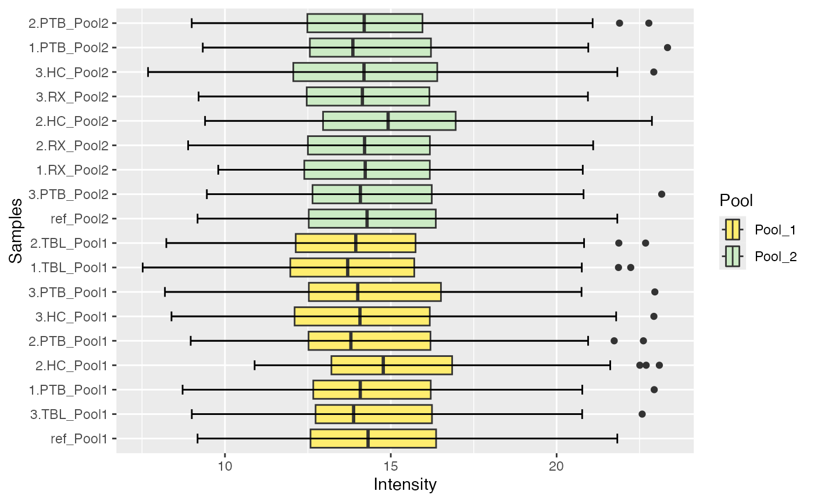
#>
#> $Mean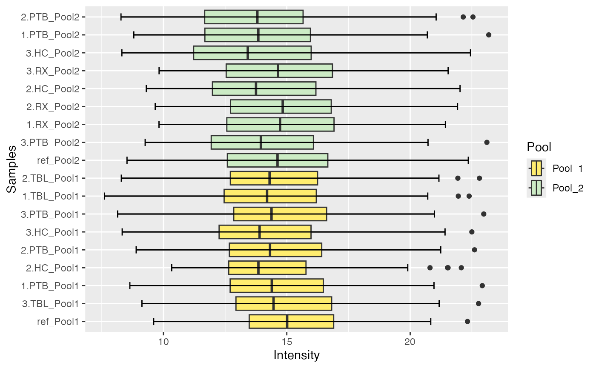
Densities of Normalized Data
Similarly you can visualize the densities of the normalized data.
plot_densities(se_norm, ain = c("Mean", "MAD"), color_by = NULL, facet_norm = TRUE)
#> Condition of SummarizedExperiment used!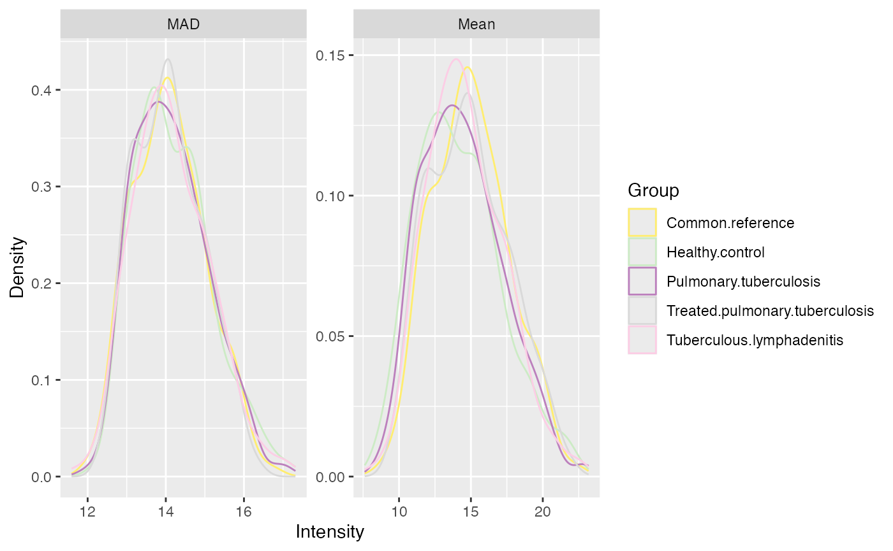
PCA of Normalized Data
Furthermore, you can visualize the normalized data in a PCA plot. Here you have some more arguments that can be specified If you decide to visualize the methods in independent plots (facet_norm = FALSE), then a list of ggplot objects is returned. However, you have the additional option to facet by any other column of the metadata (using the facet_by parameter). Here an example:
plot_PCA(se_norm, ain = c("RobNorm", "Mean"), color_by = "Group", label_by = "No", shape_by = "Pool", facet_norm = FALSE, facet_by = "Group")
#> No labeling of samples.
#> $RobNorm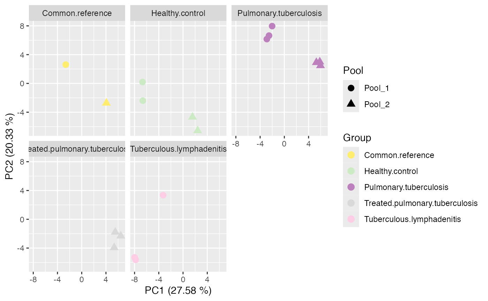
#>
#> $Mean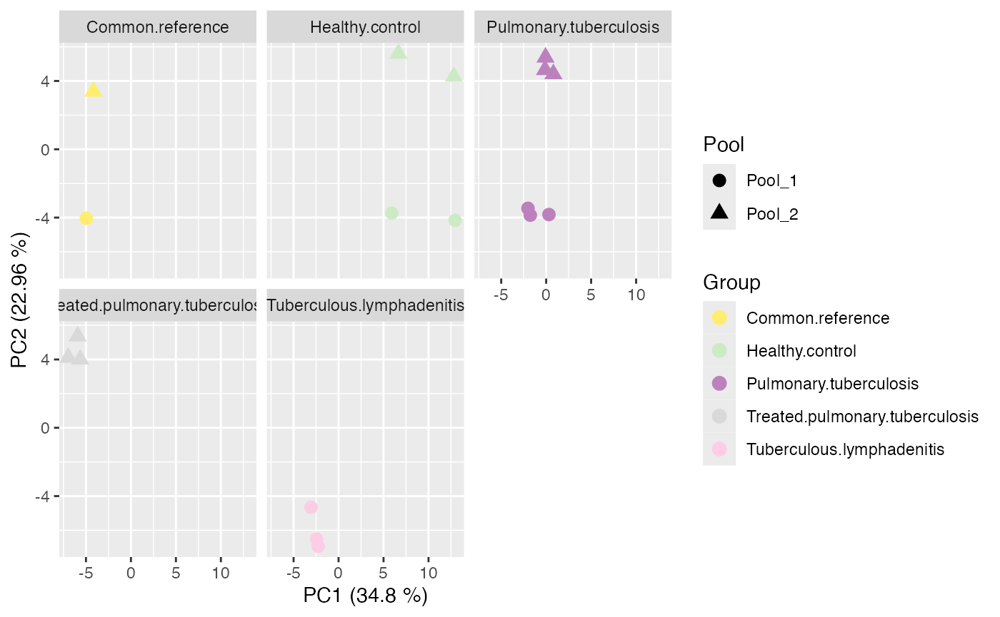
Or you can simply plot the PCA of the normalized data next to each other. However, the facet_by argument can then not be used. Reminder, by setting color_by = NULL, it will be first checked if a condition has been set in the SummarizedExperiment during loading the data.
plot_PCA(se_norm, ain = c("Mean", "log2"), color_by = NULL, label_by = "No", shape_by = "Pool", facet_norm = TRUE)
#> Condition of SummarizedExperiment used!
#> No labeling of samples.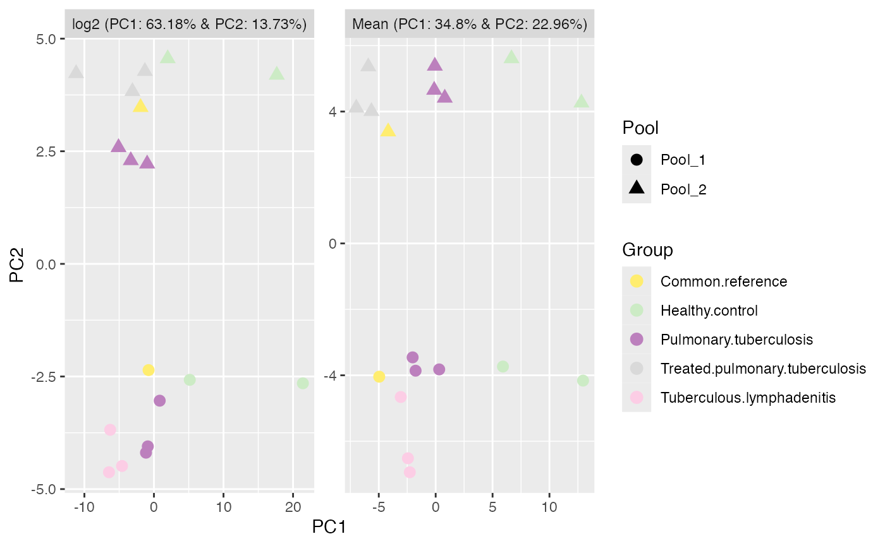
Additionally, you can add all the individual normalized sample
intensities to a big SummarizedExperiment object, and perform a single
PCA on all samples (all samples meaning samples from all normalization
methods). First, you need to create the SummarizedExperiment object
using generate_complete_SE() and then you can simply call
the plot_PCA() function.
se_complete <- generate_complete_SE(se_norm, ain = NULL) # NULL -> all assays are taken
#> All assays of the SummarizedExperiment will be used.
plot_PCA(se_complete, ain = NULL, color_by = "Normalization", label_by = "No", shape_by = "Pool", facet_norm = FALSE)
#> All assays of the SummarizedExperiment will be used.
#> No labeling of samples.
#> No faceting done.
#> $all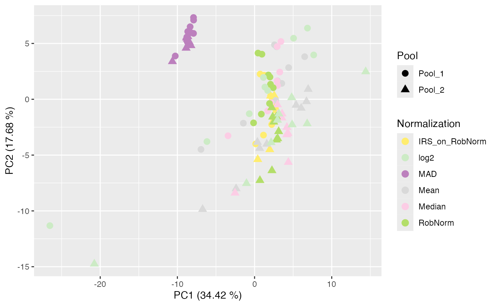
Intragroup Variation
The assessment of the normalization methods is commonly centered on their ability to decrease intragroup variation between samples, using intragroup pooled coefficient of variation (PCV), pooled estimate of variance (PEV), and pooled median absolute deviation (PMAD) as measures of variability. Furthermore, the Pearson correlation between samples is used to measure the similarity of the samples within the same group.
In PRONE, you can evaluate the intragroup variation of the normalized
data by using the functions plot_intragroup_correlation(),
plot_intragroup_PCV(), plot_intragroup_PMAD(),
and plot_intragroup_PEV().
plot_intragroup_correlation(se_norm, ain = NULL, condition = NULL, method = "pearson")
#> All assays of the SummarizedExperiment will be used.
#> Condition of SummarizedExperiment used!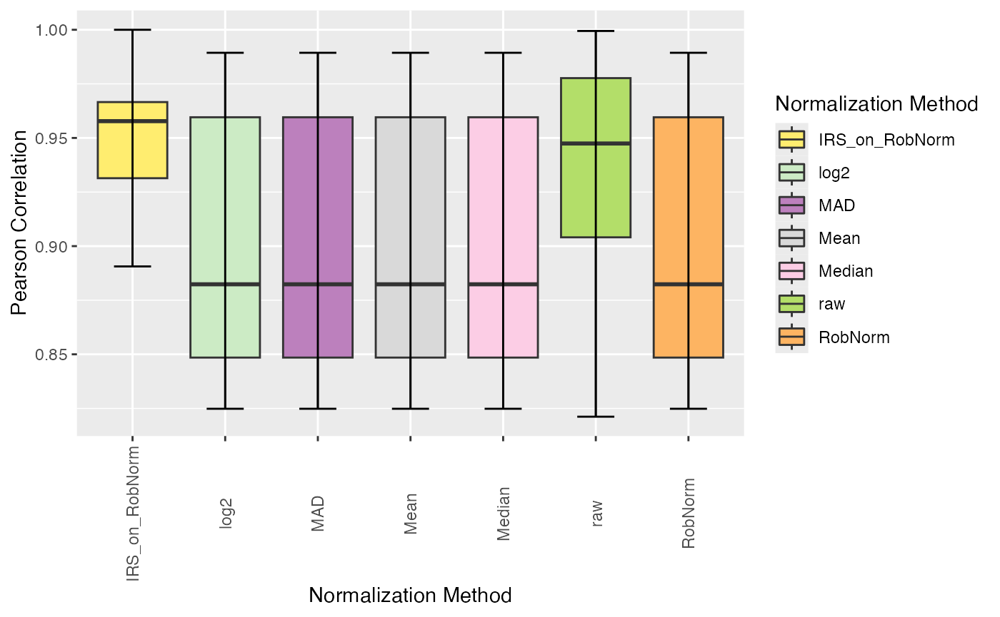
You have two options to visualize intragroup PCV, PEV, and PMAD. You can either simply generate boxplots of intragroup variation of each normalization method (diff = FALSE), or you can visualize the reduction of intragroup variation of each normalization method compared to log2 (diff = TRUE).
plot_intragroup_PCV(se_norm, ain = NULL, condition = NULL, diff = FALSE)
#> All assays of the SummarizedExperiment will be used.
#> Condition of SummarizedExperiment used!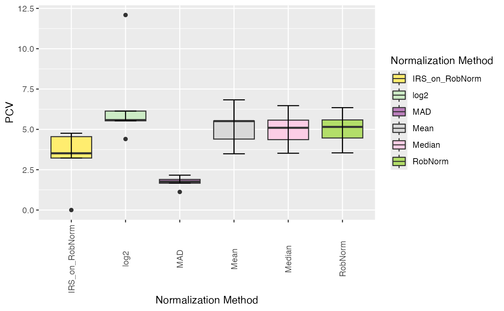
plot_intragroup_PEV(se_norm, ain = NULL, condition = NULL, diff = FALSE)
#> All assays of the SummarizedExperiment will be used.
#> Condition of SummarizedExperiment used!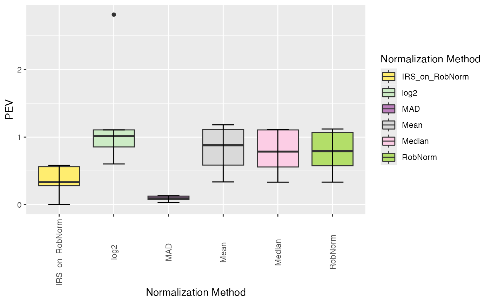
plot_intragroup_PMAD(se_norm, ain = NULL, condition = NULL, diff = FALSE)
#> All assays of the SummarizedExperiment will be used.
#> Condition of SummarizedExperiment used!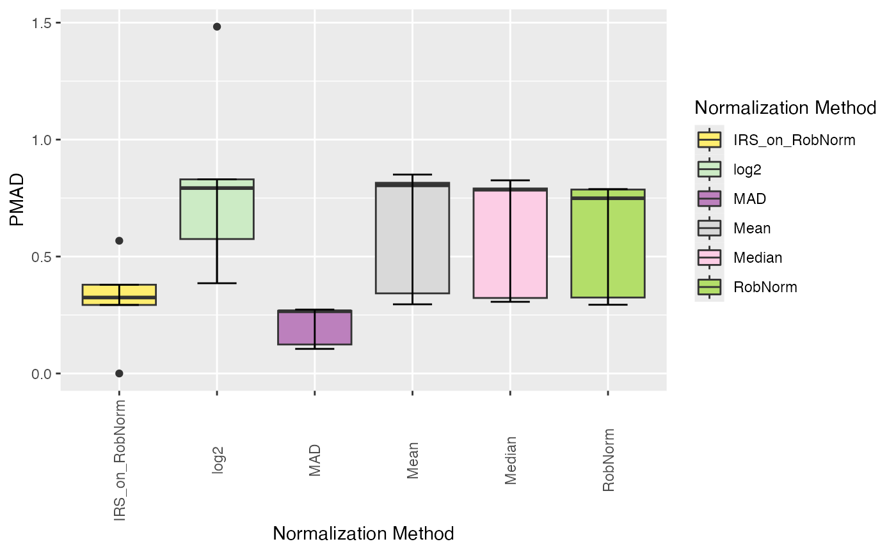
plot_intragroup_PCV(se_norm, ain = NULL, condition = NULL, diff = TRUE)
#> All assays of the SummarizedExperiment will be used.
#> Condition of SummarizedExperiment used!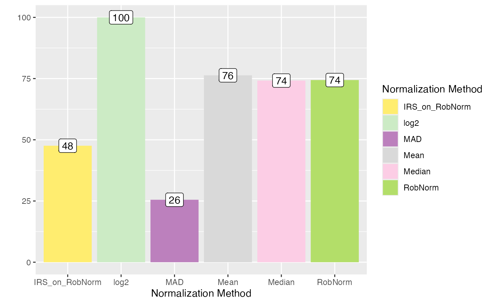
plot_intragroup_PEV(se_norm, ain = NULL, condition = NULL, diff = TRUE)
#> All assays of the SummarizedExperiment will be used.
#> Condition of SummarizedExperiment used!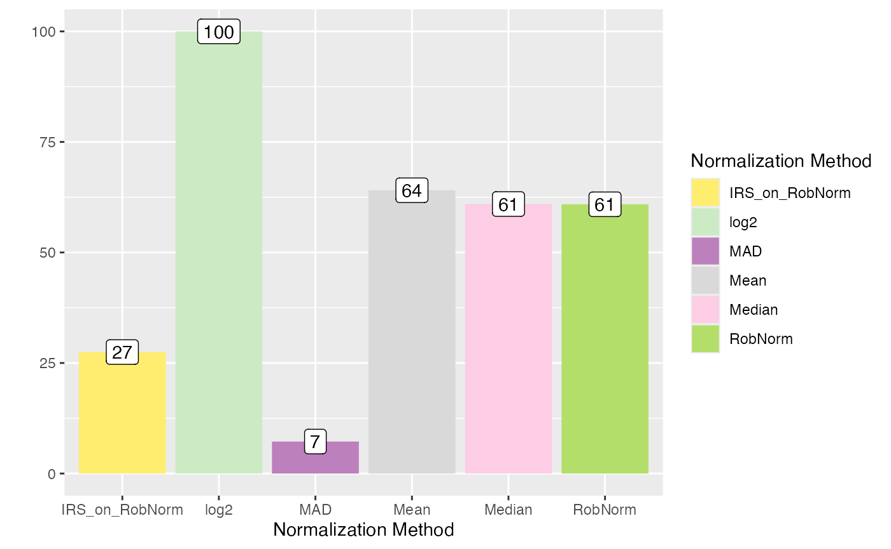
plot_intragroup_PMAD(se_norm, ain = NULL, condition = NULL, diff = TRUE)
#> All assays of the SummarizedExperiment will be used.
#> Condition of SummarizedExperiment used!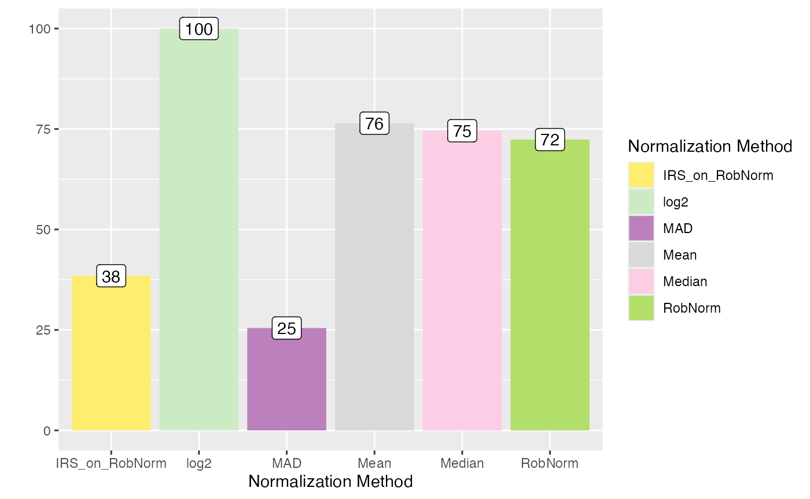
Subset SummarizedExperiment
After the qualitative and quantitative evaluation, you may have
noticed that some normalization techniques are not appropriate for the
specific real-world data set. For further analysis, you want to remove
them and not evaluate the specific normalization methods furthermore.
For this, the remove_assays_from_SE() method can be
used.
se_no_MAD <- remove_assays_from_SE(se_norm, assays_to_remove = c("MAD"))In contrast, you can also subset the SummarizedExperiment object to
only include specific normalization techniques using the
subset_SE_by_norm()method.
se_subset <- subset_SE_by_norm(se_norm, ain = c("Mean", "RobNorm"))Differential Expression Analysis
After having performed normalization and evaluated the different normalization methods via qualitative and quantitative analysis, differential expression analysis can be used to further analyze the differences of the normalization methods.
However before, you need to remove the reference samples in case of a
TMT experiment. This can be easily done with the function
remove_reference_samples().
se_norm <- remove_reference_samples(se_norm)
#> 2 reference samples removed from the SummarizedExperiment object.Run DE Analysis
First, you need to specify the comparisons you want to perform in DE
analysis. For this, the function specifc_comparisons() was
developed which helps to build the right comparison strings. For
instance, if you are having a condition column “Condition” in your meta
data that is built upon two individual groups, such as “diabetic_3d”
referring to diabetic samples at day 3 after operation, you can simply
specify sep = “_” and the method only considers comparisons where at
least one of the group remains static.
However, you can also just simply create a vector of comparisons to ensure the correct order and handle this vector over to the DE analysis method.
comparisons <- specify_comparisons(se_norm, condition = "Group", sep = "_", control = NULL)The function run_DE() performs the DE analysis on the
selected SummarizedExperiment and comparisons. DE analysis can be
performed on multiple assays (normalization methods) at once using the
already known “ain” parameter. The condition of the SummarizedExperiment
object, specified at the beginning, can be used (condition = NULL) or
any other column of the meta data can specified. Three methods are
available for DE analysis: limma, DEqMS, and ROTS. The meaning of the
other parameters can be extracted from the documentation of the
method.
de_res <- run_DE(se = se_norm,
comparisons = comparisons,
ain = NULL,
condition = NULL,
DE_method = "limma",
covariate = NULL,
logFC = TRUE,
logFC_up = 1,
logFC_down = -1,
p_adj = TRUE,
alpha = 0.05,
B = 100,
K = 500)
#> Condition of SummarizedExperiment used!
#> All assays of the SummarizedExperiment will be used.
#> DE Analysis will not be performed on raw data.
#> log2: DE analysis completed.
#> RobNorm: DE analysis completed.
#> Mean: DE analysis completed.
#> MAD: DE analysis completed.
#> IRS_on_RobNorm: DE analysis completed.
#> Median: DE analysis completed.If you want to apply other logFC or p-value threshold, there is no
need to re-run the DE analysis again. With
apply_thresholds(), you can simply change the threshold
values.
new_de_res <- apply_thresholds(de_res = de_res, logFC = FALSE, p_adj = TRUE, alpha = 0.05)Visualize DE Results
Barplot
To get an overview of the DE results of the different normalization
methods, you can visualize the number of significant DE proteins per
normalization method in a barplot using
plot_overview_DE_bar(). This plot can be generated in
different ways by specifying the “plot_type” parameter: * single: plot a
single barplot for each comparison (default) * facet_comp: facet the
barplot by comparison * stacked: stack the number of DE per comparison *
facet_regulation: stack the number of DE per comparison but facet by up-
and down-regulated
plot_overview_DE_bar(de_res, ain = NULL, comparisons = comparisons, plot_type = "facet_regulation")
#> All normalization methods of de_res will be visualized.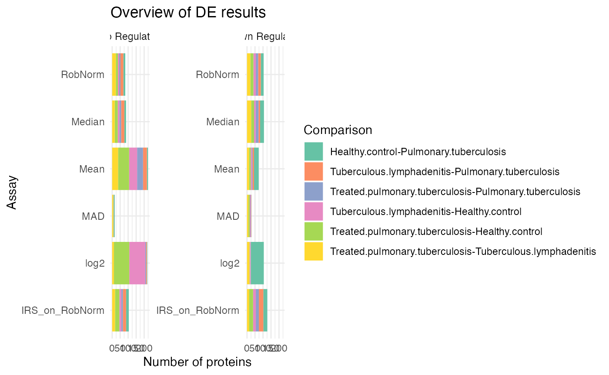
Tile Plot
You can also get an overview of the DE results in form of a heatmap
using the plot_overview_DE_tile().
plot_overview_DE_tile(de_res)
#> All comparisons of de_res will be visualized.
#> All normalization methods of de_res will be visualized.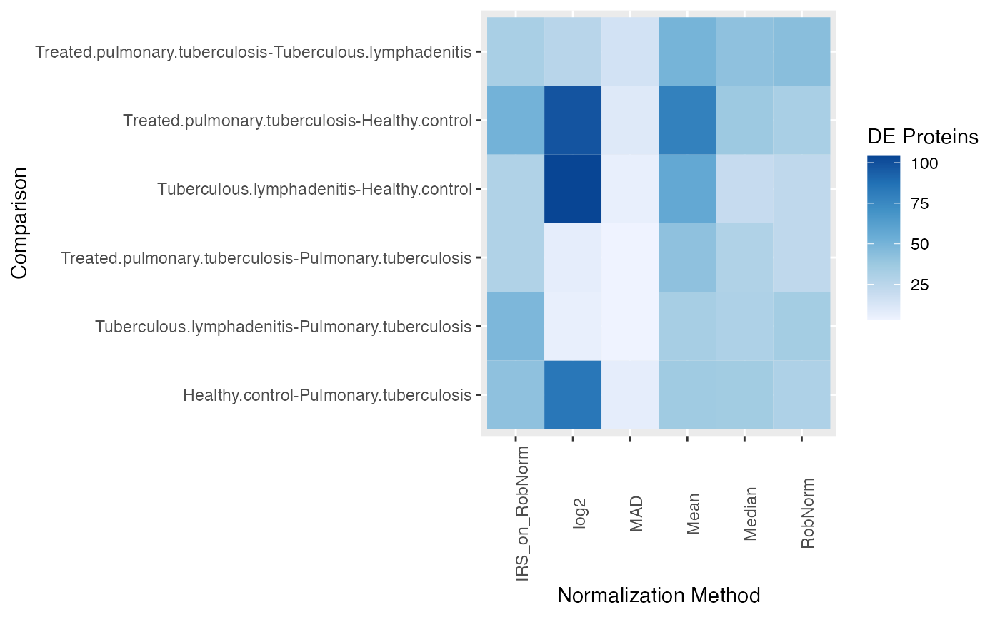
Volcano Plots
Another option is to generate volcano plots for each comparison. The
function plot_volcano_DE() generates a grid of volcano
plots for each normalization techniques (facet_norm = TRUE) or for each
comparison (facet_comparison = TRUE). A list of volcano plots is
returned.
plot_volcano_DE(de_res, ain = NULL, comparisons = comparisons[1], facet_norm = TRUE)
#> All normalization methods of de_res will be visualized.
#> $`Healthy.control-Pulmonary.tuberculosis`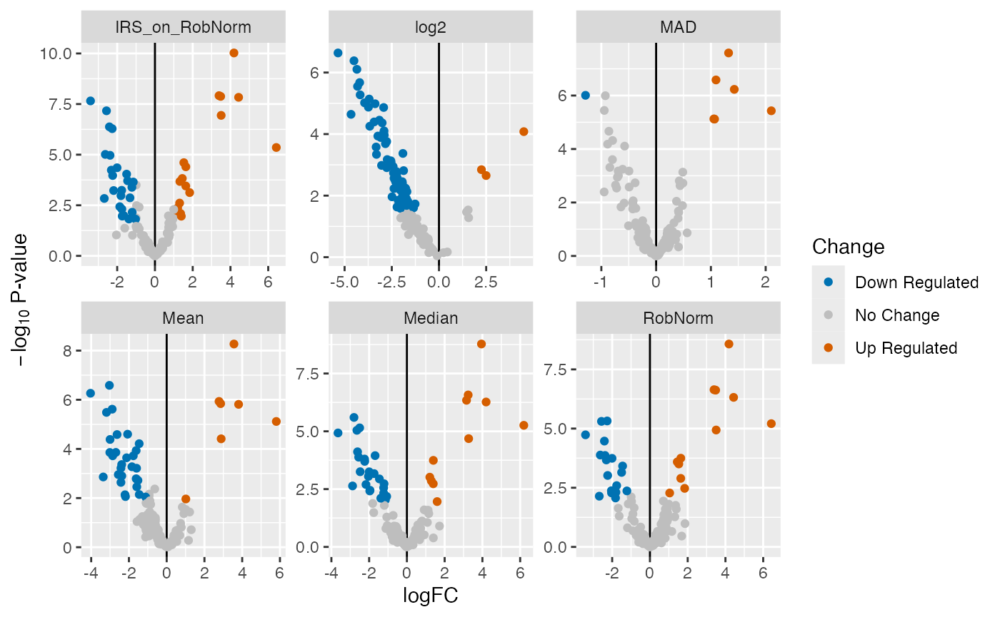
Intersection Analysis of DE Results
Moreover, you can also intersect the DE results of different
normalization methods to see how many DE proteins overlap. You can
either plot for each requested comparison an individual upset plot
(plot_type = “single”) or stack the number of overlapping DE proteins
per comparison (“stacked”). Not only the upset plot(s) are returned, but
also a table with the intersections is provided by the
plot_upset_DE()function.
intersections <- plot_upset_DE(de_res, ain = NULL, comparisons = comparisons, min_degree = 2, plot_type = "stacked")
#> All normalization methods of de_res will be visualized.
intersections$upset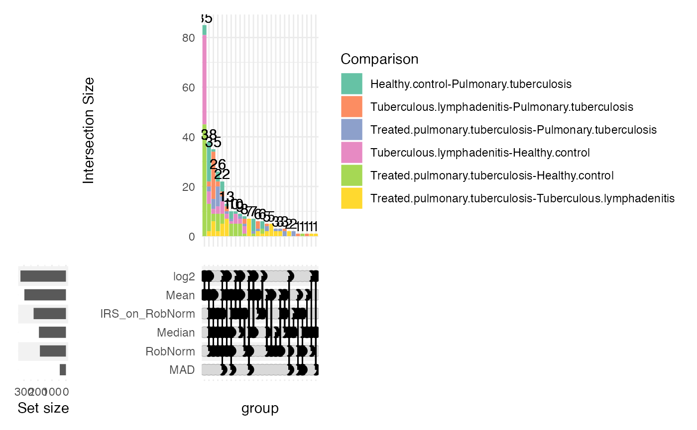
Additionally, the Jaccard similarity index can be calculated to quantify the similarity of the DE results between the different normalization methods. A individual heatmap can be generated for each comparison (“plot_type = single”), a single heatmap facetted by comparison (“facet_comp”) or a single heatmap taking all comparisons into account (“all”) can be generated.
plot_jaccard_heatmap(de_res, ain = NULL, comparisons = comparisons, plot_type = "all")
#> All normalization methods of de_res will be visualized.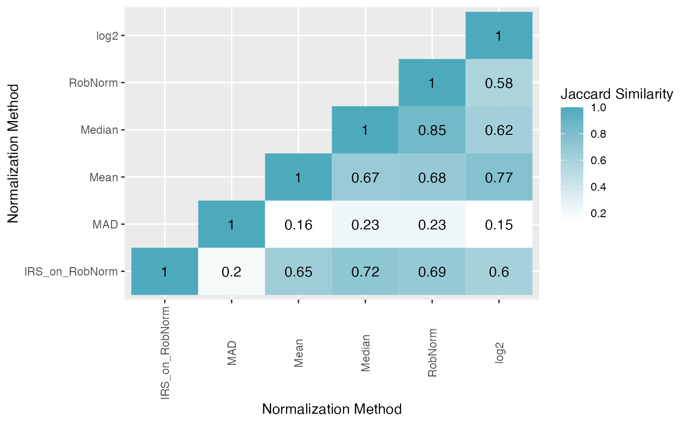
Download Data
Finally, you can easily download the normalized data by using the
export_data()function. This function will save the
specified assays as CSV files and the SummarizedExperiment object as an
RDS file in a specified output directory.
export_data(se_norm, out_dir = "output/", ain = c("IRS_on_RobNorm", "Mean", "RobNorm"))Spike-in Data Sets
PRONE also offers some additional functionalities for the evaluation of normalization techniques on spike-in data sets with a known ground truth. These functionalities will be delineated subsequently. Additionally, all functionalities detailed in the context of real-world data sets remain applicable to the SummarizedExperiment object associated with spike-in data sets.
The example spike-in data set is from:
Jürgen Cox, Marco Y. Hein, Christian A. Luber, Igor Paron, Nagarjuna Nagaraj, and Matthias Mann. Accurate Proteome-wide Label-free Quantification by Delayed Normalization and Maximal Peptide Ratio Extraction, Termed MaxLFQ. Molecular & Cellular Proteomics 13.9 (Sept. 2014), pp. 2513–2526. https://doi.org/10.1074/mcp.M113.031591.
Load Data
Initially, the spike-in data set needs to be imported into a
SummarizedExperiment container. In contrast to the real-world data sets,
you need to specify the “spike_column”, “spike_value”,
“spike_concentration”, and utilize the load_spike_data()
function for this purpose.
Here, the “spike_column” denotes the column in the protein intensity data file encompassing information whether a proteins is classified as spike-in or background protein. The “spike_value” determines the value/identifier that is used to identify the spike-in proteins in the “spike_column”, and the “spike_concentration” identifies the column containing the concentration values of the spike-in proteins (in this case the different conditions that will be tested in DE analysis).
data <- read.csv("../inst/extdata/spike/proteinGroups.txt", sep = "\t")
md <- read.csv("../inst/extdata/spike/experimentalDesign.txt", sep = "\t")
# Check if some protein groups are mixed
mixed <- grepl("Homo sapiens.*Escherichia|Escherichia.*Homo sapiens", data$Fasta.headers)
data <- data[!mixed,]
data$Spiked <- rep("HUMAN", nrow(data))
data$Spiked[grepl("ECOLI", data$Fasta.headers)] <- "ECOLI"
se <- load_spike_data(data, md, spike_column = "Spiked", spike_value = "ECOLI", spike_concentration = "Concentration",protein_column = "Protein.IDs", gene_column = "Gene.names", ref_samples = NULL, batch_column = NULL, condition_column = "Condition", label_column = "Label")Overview of the Data
To get an overview on the number of identified (non-NA) spike-in
proteins per sample, you can use the
plot_identified_spiked_proteins() function.
plot_identified_spiked_proteins(se)
#> Condition of SummarizedExperiment used!
#> Label of SummarizedExperiment used!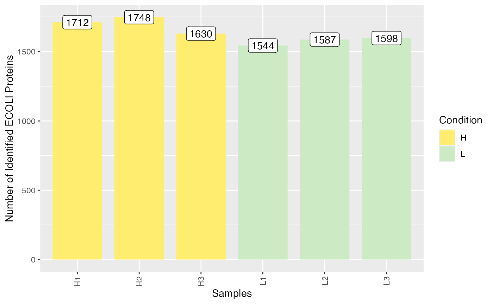
To compare the distributions of spike-in and human proteins in the
different sample groups (here high-low), use the function
plot_histogram_spiked(). Again, “condition = NULL” means
that the condition specified by loading the data is used, but you can
also specify any other column of the meta data.
plot_histogram_spiked(se, condition = NULL)
#> Condition of SummarizedExperiment used!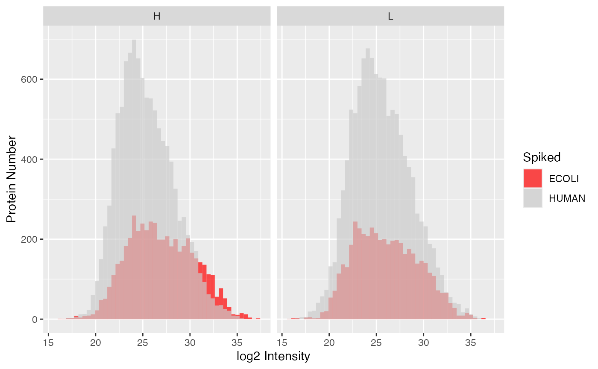
If you want to have a look at the amount of actual measure spike-in,
you can use the plot_profiles_spiked() function. Moreover,
you can analyze whether the intensities of the background proteins, here
HUMAN proteins, are constant across the different spike-in
concentrations.
plot_profiles_spiked(se, xlab = "Concentration")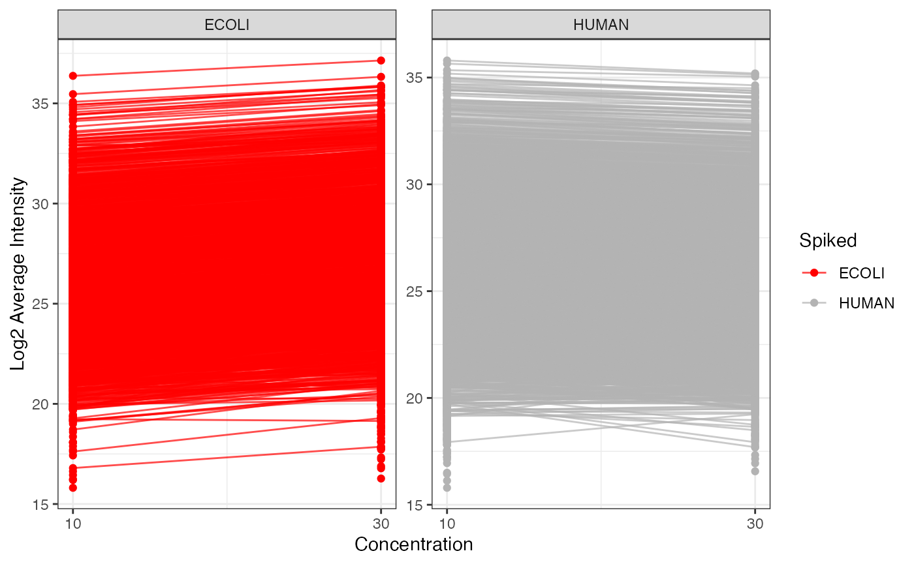
Preprocessing
Given that the preprocessing (including filtering of proteins and samples), normalization, and imputation operations remain invariant for spike-in data sets compared to real-world data sets, the same methodologies can be employed across both types. In this context, normalization will only be demonstrated here as the performance of the methods will be evaluated in DE analysis, while detailed descriptions of the other functionalities are available in preceding sections.
se_norm <- normalize_se(se, c("Median", "Mean", "MAD", "LoessF"), combination_pattern = NULL)
#> Median completed.
#> Mean completed.
#> MAD completed.
#> LoessF completed.Differential Expression Analysis
Due to the known spike-in concentrations, the normalization methods can be evaluated based on their ability to detect DE proteins. The DE analysis can be conducted using the same methodology as for real-world data sets. However, other visualization options are available and performance metrics can be calculated for spike-in data sets.
Run DE Analysis
First, you need to specify the comparisons you want to perform in DE analysis. For this, a special function was developed which helps to build the right comparison strings.
comparisons <- specify_comparisons(se_norm, condition = "Condition", sep = NULL, control = NULL)Then you can run DE analysis:
de_res <- run_DE(se = se_norm,
comparisons = comparisons,
ain = NULL,
condition = NULL,
DE_method = "limma",
covariate = NULL,
logFC = TRUE,
logFC_up = 1,
logFC_down = -1,
p_adj = TRUE,
alpha = 0.05,
B = 100,
K = 500)
#> Condition of SummarizedExperiment used!
#> All assays of the SummarizedExperiment will be used.
#> DE Analysis will not be performed on raw data.
#> log2: DE analysis completed.
#> Median: DE analysis completed.
#> Mean: DE analysis completed.
#> MAD: DE analysis completed.
#> LoessF: DE analysis completed.Evaluate DE Results with Performance Metrics
Before being able to visualize the DE results, you need to run
get_spiked_stats_DE() to calculate multiple performance
metrics, such as the number of true positives, number fo false
positives, etc.
stats <- get_spiked_stats_DE(se_norm, de_res)You have different options to visualize the amount of true and false positives for the different normalization techniques and pairwise comparisons. For all these functions, you can specify a subset of normalization methods and comparisons. If you do not specify anything, all normalization methods and comparisons of the “stats” data frame are used.
The plot_TP_FP_spiked_bar() function generates a barplot
showing the number of false positives and true positives for each
normalization method and is facetted by pairwise comparison.
plot_TP_FP_spiked_bar(stats, ain = c("Median", "Mean", "MAD", "LoessF"), comparisons = NULL)
#> All comparisons of stats will be visualized.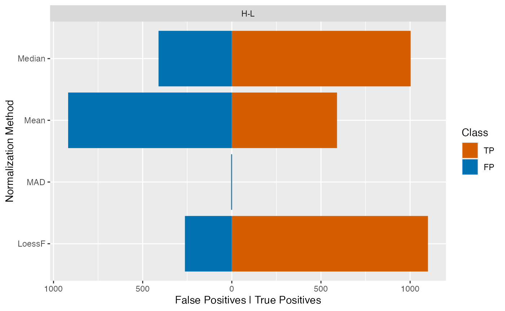
If many pairwise comparisons were performed, the
plot_TP_FP_spiked_box() function can be used to visualize
the distribution of true and false positives for all pairwise
comparisons in a boxplot.
Given that the data set encompasses merely two distinct spike-in concentrations and therefore only one pairwise comparison has been conducted in DE analysis, a barplot would be more appropriate. Nonetheless, for demonstration purposes, a boxplot will be used here.
plot_TP_FP_spiked_box(stats, ain = c("Median", "Mean", "MAD", "LoessF"), comparisons = NULL)
#> All comparisons of stats will be visualized.
Furthermore, similarly the plot_TP_FP_spiked_scatter()
function can be used to visualize the true and false positives in a
scatter plot. Here, a scatterplot of the median true positives and false
positives is calculated across all comparisons and displayed for each
normalization method with errorbars showing the Q1 and Q3. Here again,
this plot is more suitable for data sets with multiple pairwise
comparisons.
plot_TP_FP_spiked_scatter(stats, ain = NULL, comparisons = NULL)
#> All comparisons of stats will be visualized.
#> All normalization methods of de_res will be visualized.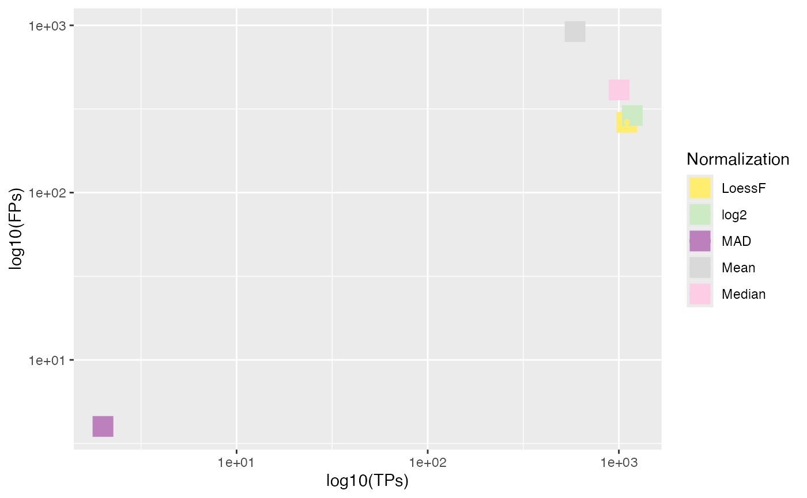
Furthermore, other performance metrics that the number of true
positives and false positives can be visualized using the
plot_stats_spiked_heatmap() function. Here, currently, the
sensitivity, specificity, precision, FPR, F1 score, and accuracy can be
visualized for the different normalization methods and pairwise
comparisons.
plot_stats_spiked_heatmap(stats, ain = c("Median", "Mean", "MAD"), metrics = c("Precision", "F1Score"))
#> All comparisons of stats will be visualized.
Finally, ROC and AUC values can be calculated and visualized using
the plot_ROC_AUC_spiked() function. This function returns a
plot showing the ROC curves, a bar plot with the AUC values for each
comparison, and a boxplot with the distributions of AUC values across
all comparisons.
plot_ROC_AUC_spiked(se_norm, de_res, ain = c("Median", "Mean", "LoessF"), comparisons = NULL)
#> All comparisons of de_res will be visualized.
#> $ROC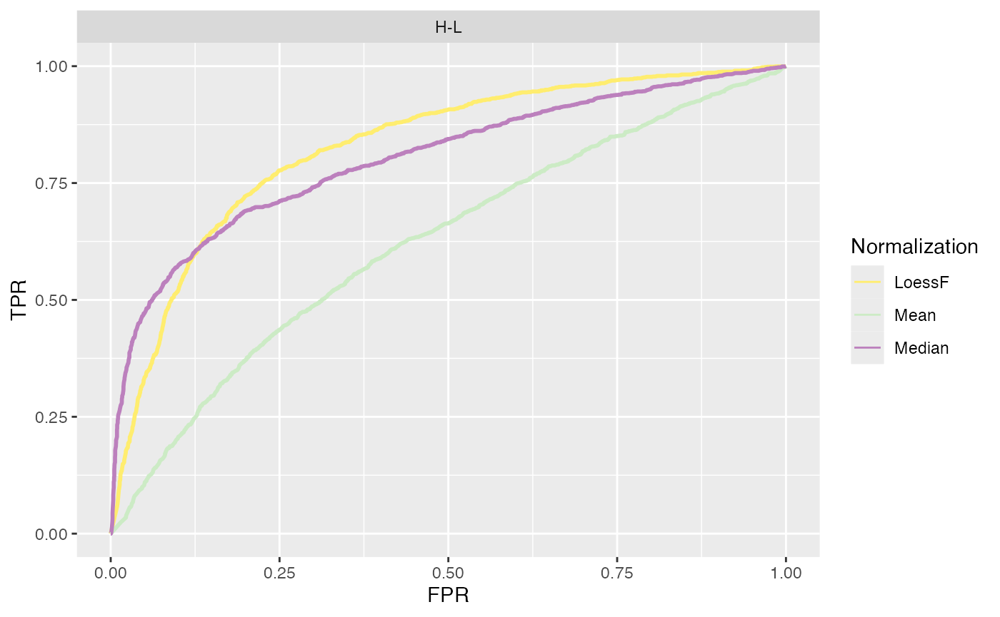
#>
#> $AUC_bars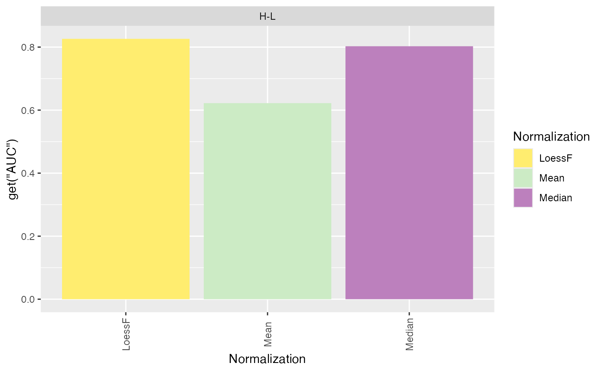
#>
#> $AUC_box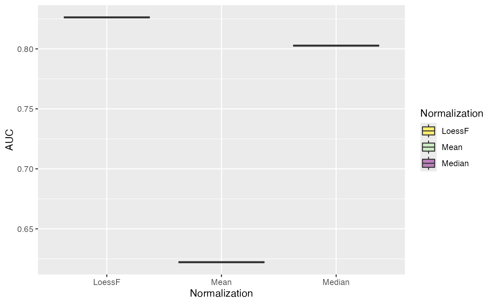
#>
#> $AUC_dt
#> PANEL Comparison group Assay AUC
#> 1 1 H-L 1 LoessF 0.8262511
#> 2 1 H-L 2 Mean 0.6221822
#> 3 1 H-L 3 Median 0.8026922Log Fold Change Distributions
Furthermore, you can visualize the distribution of log fold changes
for the different conditions using the
plot_fold_changes_spiked() function. The fold changes of
the background proteins should be centered around zero, while the
spike-in proteins should be centered around the actual log fold change
calculated based on the spike-in concentrations.
plot_fold_changes_spiked(se_norm, de_res, condition = "Condition", ain = c("Median", "Mean", "MAD"), comparisons = NULL)
#> All comparisons of de_res will be visualized.
P-Value Distributions
Similarly, the distributions of the p-values can be visualized using
the plot_pvalues_spiked() function.
plot_pvalues_spiked(se_norm, de_res, ain = c("Median", "Mean", "MAD"), comparisons = NULL)
#> All comparisons of de_res will be visualized.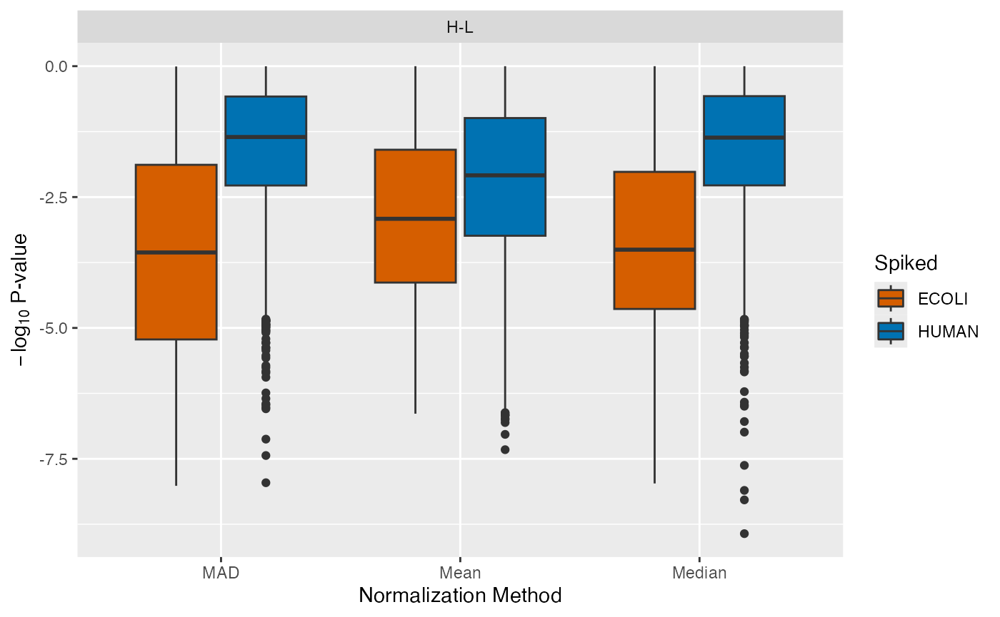
Log Fold Change Thresholds
Due to the high amount of false positives encountered in spike-in
data sets, we provided a function to test for different log fold change
thresholds to try to reduce the amount of false positives. The function
plot_logFC_thresholds_spiked() can be used to visualize the
number of true positives and false positives for different log fold
change thresholds.
plot_logFC_thresholds_spiked(se_norm, de_res, condition = NULL, ain = c("Median", "Mean", "MAD"), nrow = 1, alpha = 0.05)
#> All comparisons of de_res will be visualized.
#> Condition of SummarizedExperiment used!
#> $TP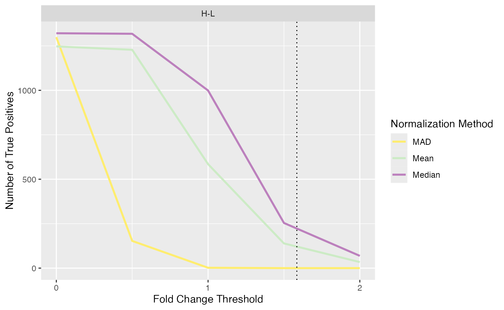
#>
#> $FP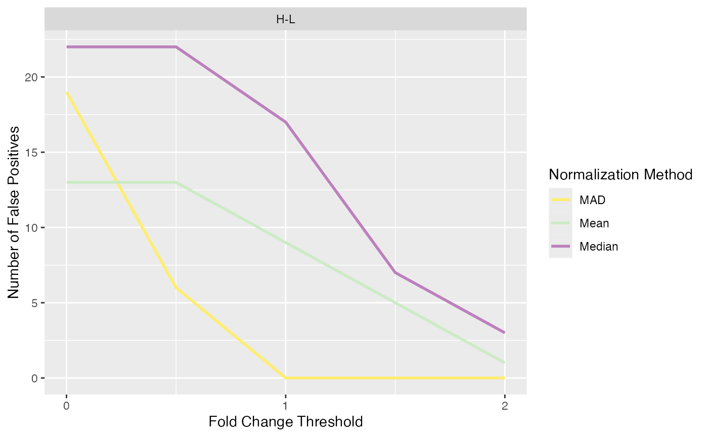